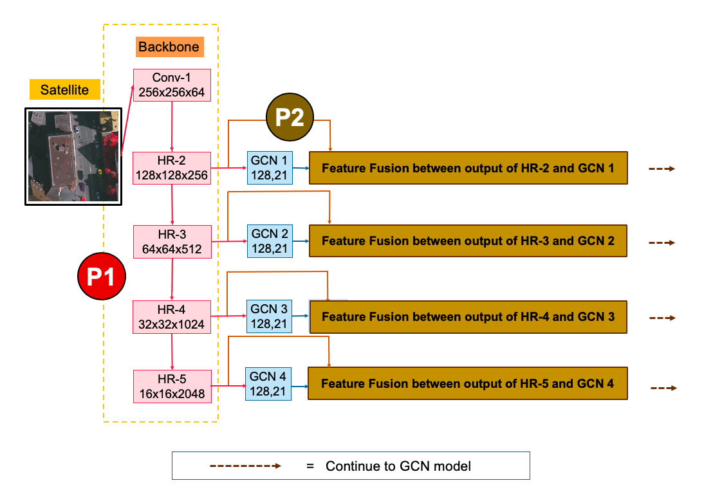
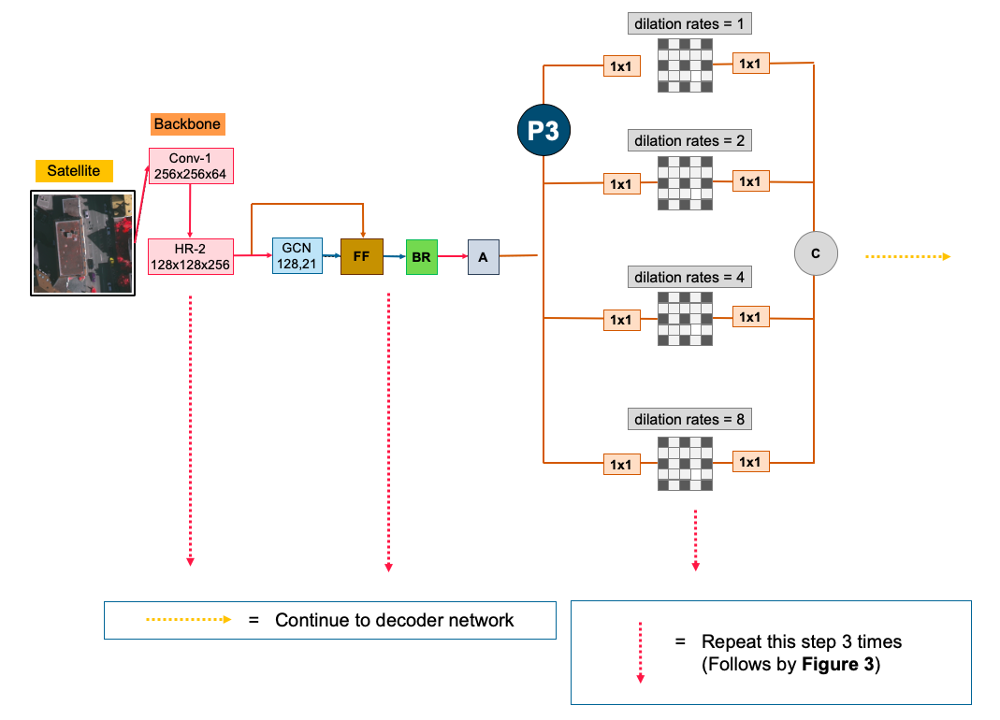
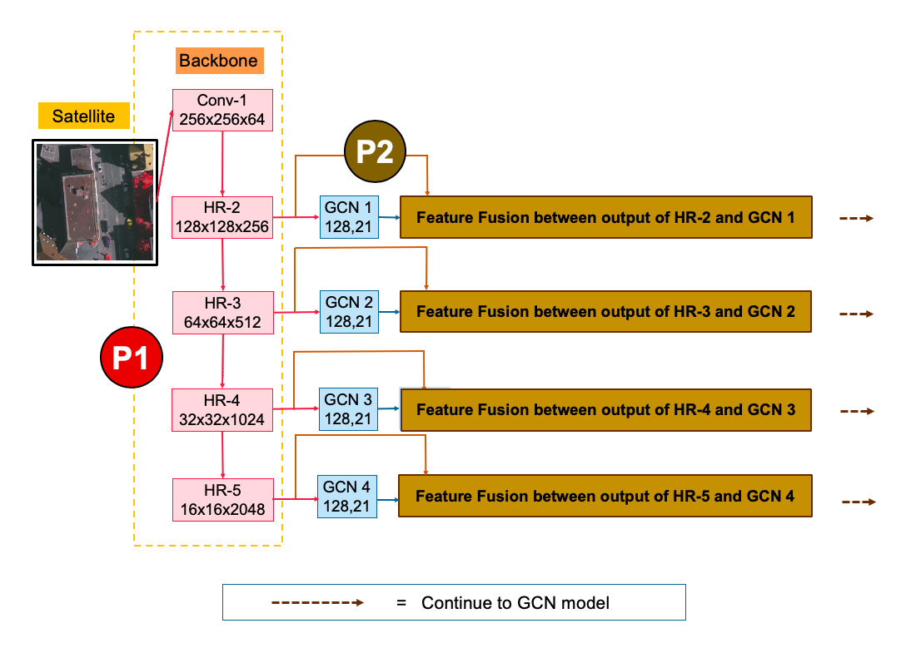
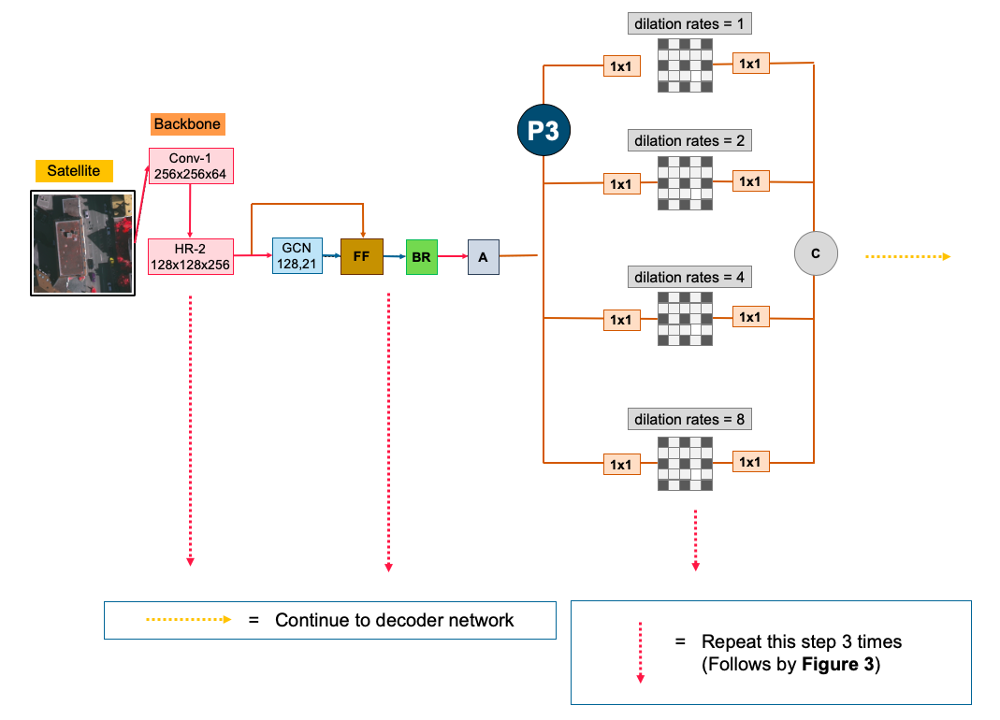
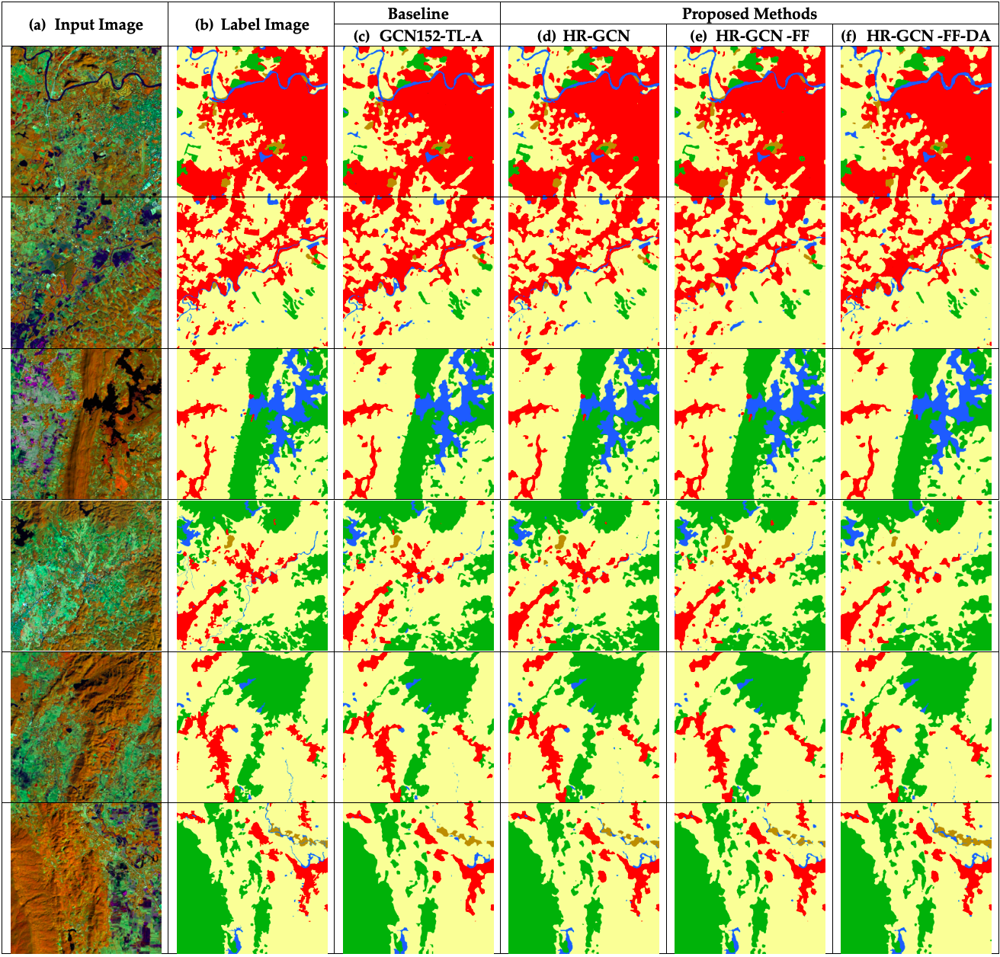
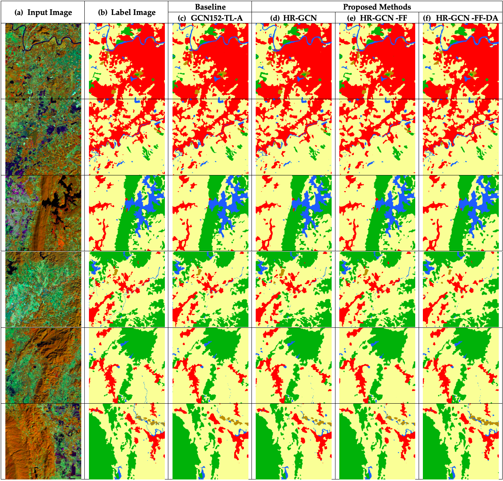

üìö Overview
FusionNetGeoLabel is a cutting-edge deep learning framework tailored for semantic segmentation in remotely sensed imagery. This project is the result of my Ph.D. research focused on improving accuracy and efficiency in labeling satellite and aerial images.
üéì Academic Excellence & Scholarships
I have completed my Ph.D. in Computer Engineering at Chulalongkorn University (2018–2020), proudly supported by these prestigious scholarships:
- The 100th Anniversary Chulalongkorn University Fund for Doctoral Scholarship
- The 90th Anniversary of Chulalongkorn University Scholarship
I also completed my Master of Engineering in Computer Engineering degree (2016–2017), supported by
- The H.M. the King Bhumibhol Adulyadej’s 72nd Birthday Anniversary Scholarship
üìö Thesis Works
View Ph.D. Thesis View M.Eng. Thesis
üìù Selected Publications
- Panboonyuen, T., et al., Transformer-Based Decoder Designs for Semantic Segmentation on Remotely Sensed Images, Remote Sensing, 2021. Read Paper
- Panboonyuen, T., et al., Feature Fusion-Based Enhanced Global Convolutional Network with Channel Attention for Remote Sensing, Remote Sensing, 2020. Read Paper
- Panboonyuen, T., et al., Road Segmentation on Aerial Imagery Using Deep CNNs and Conditional Random Fields, Remote Sensing, 2017. Read Paper
My research advances state-of-the-art semantic segmentation for remote sensing imagery, combining novel neural architectures, attention mechanisms, and domain-specific transfer learning — with applications in smart cities, environmental monitoring, and geospatial intelligence.
üìÑ Abstract
Semantic segmentation plays a crucial role in remote sensing, impacting fields such as agriculture, map updating, and navigation.
While Deep Convolutional Encoder-Decoder networks are widely used, they often struggle to accurately identify fine low-level features such as rivers and vegetation due to architectural limits and scarcity of domain-specific training data.
This dissertation proposes an advanced semantic segmentation framework designed specifically for remote sensing imagery, featuring five key innovations:
- Global Convolutional Network (GCN): Enhances segmentation accuracy for remote sensing images.
- Channel Attention Mechanism: Focuses on the most critical features for better performance.
- Domain-Specific Transfer Learning: Addresses limited training data challenges.
- Feature Fusion (FF): Integrates low-level features effectively.
- Depthwise Atrous Convolution (DA): Refines feature extraction for improved segmentation.
Experiments on Landsat-8 datasets and the ISPRS Vaihingen benchmark demonstrate significant performance improvements over baseline models.
üìÅ Key Resources & Publications
Explore the core assets underpinning my research and contributions to the field of semantic segmentation on remote sensing imagery:
These resources highlight the rigor, reproducibility, and impact of my work within the computer vision and remote sensing communities.
üîß How to Use
Training
Clone the repository and install dependencies:
git clone https://github.com/kaopanboonyuen/FusionNetGeoLabel.git
cd FusionNetGeoLabel
pip install -r requirements.txt
Prepare your dataset and modify config.json as needed, then start training:
python train.py --config config.jsonInference
Download pretrained models from the repository and run inference:
python inference.py --model path_to_pretrained_model --image path_to_imageüìù Citation
If you use this work in your research, please cite:
@phdthesis{panboonyuen2019semantic,
title = {Semantic segmentation on remotely sensed images using deep convolutional encoder-decoder neural network},
author = {Teerapong Panboonyuen},
year = {2019},
school = {Chulalongkorn University},
type = {Ph.D. thesis},
doi = {10.58837/CHULA.THE.2019.158},
address = {Faculty of Engineering},
note = {Doctor of Philosophy}
}üì∏ Visual Results
Some highlights of our model's performance:
 



 


üöÄ What I Do & My Impact
I build cutting-edge deep learning models for semantic segmentation of aerial and satellite images — helping computers understand complex scenes like roads, vegetation, and buildings with high precision.
My latest work improves on state-of-the-art by:
- High-Resolution Backbone: Keeps detailed image features at multiple scales.
- Feature Fusion: Combines local & global info for better accuracy.
- Depthwise Atrous Convolution: Smart multi-scale filtering to capture fine details.
Tested on top benchmarks (ISPRS Vaihingen, Landsat-8), my model scores 90%+ F1 — outperforming previous bests and powering smarter remote sensing applications.
⚖️ License
This project is licensed under the MIT License.